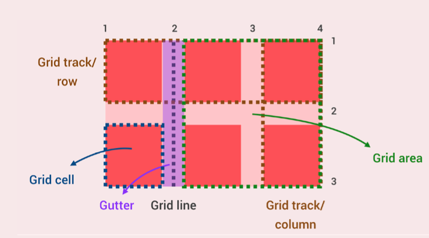

Terminology
- 網格項目 (grid item): 網格布局中的元素，可以是任何 HTML 元素。
- 網格單元格 (grid cell): 網格中的一個矩形區域，由行和列組成。
- 網格軌道 (grid track): 網格中一行或一列的區域。

Grid Sizing
fr 是指 “fractional unit”，它是一種相對單位，用於指定網格容器（grid container）中的列（columns）或行（rows）的大小
/* auto */
.container {
display: grid;
grid-template-rows: 100px auto; /* 高的 auto 只會 fit content */
grid-template-columns: 200px auto; /* 寬的 auto 會填滿 100%寬 🔥 */
}
/* minmax */
.container {
display: grid;
grid-template-rows: 200px 400px;
grid-template-columns: 200px minmax(400px, 800px);
}
/* repeat */
.container {
display: grid;
grid-template-columns: repeat(8, 1fr); /* 8 columns, each 100px wide */
grid-template-rows: repeat(8, 1fr); /* 8 rows, each 100px tall */
}
/* grid auto rows 🔥 */
.container {
display: grid;
grid-template-columns: 200px 200px;
grid-template-rows: 200px 200px;
grid-auto-rows: 300px; /* 超出的格子，未來設為高度300px 🔥 */
}
Position Grid Items
1. 使用 grid-column 和 grid-row 屬性
這種方式通過指定網格項目的起始和終止線的位置來定位它。例如：
.grid-item {
grid-column: 2 / 4; /* 從第 2 col 到第 4 col */
grid-row: 1 / 3; /* 從第 1 row 到第 3 row */
grid-row: 1 / span 2;
grid-row: 1 / -1;
/* ... 以下參考就好，不要用 ❌ */
grid-column: span 2;
grid-column-start: 2;
grid-column-end: -1;
grid-area: 1 / 3 / 2 / 4; /* row-start, column-start, row-end, column-end */
}
2. 使用命名的網格線（Named Grid Lines）
你可以在 grid-template-columns 和 grid-template-rows 屬性中使用名稱來定義網格線，然後在 grid-column 和 grid-row 屬性中使用這些名稱。例如：
.grid-container {
display: grid;
grid-template-columns: [col1] 1fr [col2] 1fr [col3 test] 1fr;
grid-template-rows: [row1] 100px [row2] 100px [row3] 100px;
}
.grid-item {
grid-column: col1 / col3 | test; /* 從 col1 到 col3 的列 */
grid-row: row1 / row3; /* 從 row1 到 row3 的行 */
}
3. 使用命名的網格區域（Named Grid Areas）：
你可以在網格容器中使用 grid-template-areas 屬性為不同的區域命名，然後在網格項目中使用 grid-area 屬性引用這些名稱。例如：
.grid-container {
display: grid;
grid-template-areas:
"header header ." /* 用點留白 🔥 */
"main main sidebar"
"footer footer footer";
}
.grid-item {
grid-area: main; /* 使用 "main" 命名的區域 */
}
Implicit Grids
在 CSS Grid 中，grid-auto-rows|columns 和 grid-auto-flow 是用於控制網格自動生成的兩個重要屬性。
1. grid-auto-rows 與grid-auto-columns
grid-auto-rows 屬性用於指定網格容器中那些由自動生成的列的高度。當你的網格項目超出了你在 grid-template-rows 中明確定義的列數時，這些額外的列會由 grid-auto-rows 屬性來控制。例如：
.grid-container {
display: grid;
grid-template-rows: 100px 100px; /* 兩個明確定義的行 */
grid-auto-rows: 50px; /* 自動生成的行的高度 */
}
在這個例子中，如果你有超過兩個網格項目，額外的行高度將為 50px。
2. grid-auto-flow
grid-auto-flow 屬性用於指定在添加新的網格項目時，它們應該如何放置到網格容器中。這個屬性有四個值：
row（預設值）：新的項目將按照行添加。column：新的項目將按照列添加。dense：網格容器將嘗試將項目填充到所有的空隙，而不僅僅是按照順序添加。dense column：組合了dense和column，新的項目將按照列添加，同時容器會嘗試填充所有的空隙。
例如：
.grid-container {
display: grid;
grid-auto-flow: column; /* 新的項目將按照直行添加 */
}
CSS Grid 中的大小選項
在 CSS Grid 中，min-content、max-content和minmax()函數被用來以一種靈活且具有響應性的方式來定義網格軌道（行或列）的大小。
-
min-content：這個關鍵字將軌道的大小設置為其內容的最小內在大小。換句話說，它使軌道的大小盡可能小，同時仍然容納其內容。grid-template-columns: min-content 1fr min-content;在這個例子中，第一行和第三行將根據它們包含的最小內容寬度來設置大小，而第二行將占據剩餘的可用空間。
-
max-content：這個關鍵字將軌道的大小設置為其內容的最大內在大小。它使軌道的大小足以容納其內容，而不會溢出。grid-template-columns: max-content 1fr max-content;類似於
min-content，這個例子將基於它們包含的最大內容寬度來設置第一列和第三列的大小，而第二行將占據剩餘的可用空間。 -
minmax(min, max)：這個函數允許你為軌道的大小指定一個範圍。它接受兩個參數，即最小大小和最大大小。瀏覽器將根據網格容器中的可用空間在這些值之間分配空間。
-
minmax() 可以用以下任何值:
- 長度
- %
- fr
- max-content
- min-content
- auto
grid-template-rows: minmax(min-content, 200px) 1fr minmax(100px, max-content);
在這個例子中，第一列的大小將基於最小內容寬度，但不會小於內容的內在大小。第二列占據剩餘的空間，而第三列的大小將基於最大內容寬度，但不會大於 200 像素。
Grid auto-fill 與 auto-fit
在 CSS Grid 中，auto-fill和auto-fit是與grid-template-columns和grid-template-rows屬性一起使用的兩個值。
-
Auto-fillauto-fill關鍵字用於重複可用的網格軌道（列或行）盡可能多次，以填充可用空間。- 它創建盡可能多的軌道，而不會溢出容器。
例子：
.container { display: grid; grid-template-columns: repeat(auto-fill, minmax(100px, 1fr)); }在此示例中，
grid-template-columns屬性設置為repeat(auto-fill, minmax(100px, 1fr));。它創建盡可能多的行，最小大小為100px，最大大小為1fr（可用空間的一部分）。 -
Auto-fitauto-fit關鍵字與auto-fill類似，但它還會折疊任何空的軌道。如果項目未填滿所有可用的軌道，則空的軌道將被折疊(寬度為 0)，網格僅占據必要的空間。
例子 (RWD Trick 🔥🔥🔥)：
.container { display: grid; grid-template-columns: repeat(auto-fit, minmax(100px, 1fr)); }類似於前一個例子，這裡使用了
auto-fit。它創建盡可能多的行，最小大小為100px，最大大小為1fr，但任何空的軌道都將折疊，網格容器僅占據必要的寬度。
以下是一些使用 auto-fill 和 auto-fit 的示例：
- 創建一個響應式網格，該網格將根據屏幕的寬度自動調整 col 數：
.container {
display: grid;
grid-template-columns: repeat(auto-fill, 1fr);
}
- 創建具有固定 col 數的網格，無論屏幕的寬度是多少：
.container {
display: grid;
grid-template-columns: repeat(4, 1fr);
}
- 創建具有 col 的網格，這些 col 始終具有相同的寬度，無論網格項的數量是多少：
.container {
display: grid;
grid-template-columns: repeat(auto-fit, 100px);
}